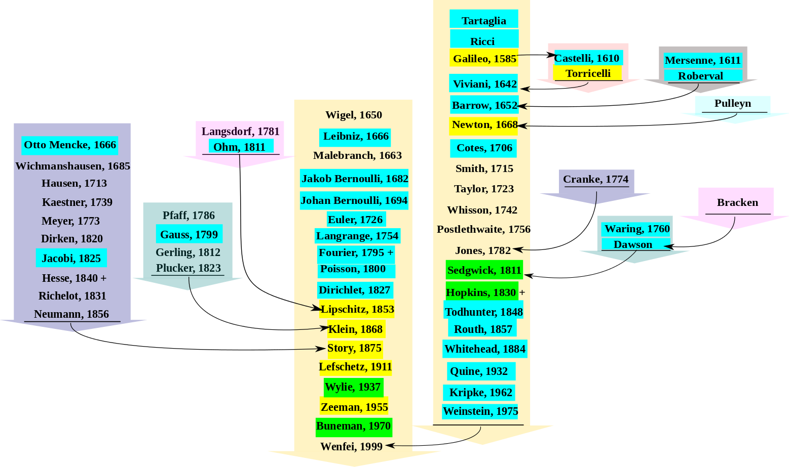

古人云：“水有源，故其流不穷；木有根，故其生不穷”。水木这般，学术亦是如此。数学谱系计划是一个编辑全世界数学领域科学家信息的网络数据库。截止2016年3月，这项计划已经收录了超过196,000 个在数学研究领域有所贡献的科学家的信息。在数学谱系 (Mathematics Genealogy Project) 网站输入你或你关注的科学家的名字，顺着导师（Advisor）来往前点击，就能很快找到你的祖师爷爷了。
牛顿曾经说过：“如果说我比别人看得更远些,那是因为我站在了巨人的肩上。”我们通过这样一个高大上的网站来追溯自己的学术谱系，看一看我们都站在了哪些巨人的肩上。然而，这也是一个极易暴露老底的陷阱，你的学术血统正不正宗，你有没有丢了你祖师爷爷的脸，一查便知。
大数据科学与工程研究中心的小伙伴们也来一起挖一挖咱们中心主任樊文飞教授的老底，看看咱们是哪位祖师爷爷是徒子徒孙。

真是不挖不知道，一挖吓一跳。Galileo, Newton, Leibniz, Euler,Gauss, Ohm, Fourier, Poisson 这些学术界里闪瞎眼的名字，竟然是咱们的祖师爷爷。不知道各位是否也如小编我一样，顿时觉得自己也高大上了起来，同时也更添了一份压力与责任。我们是真正站在巨人的肩膀上，更应该以此为动力，在科学探索的道路上勇敢前行，让这棵学术的 family tree 更加枝繁叶茂。